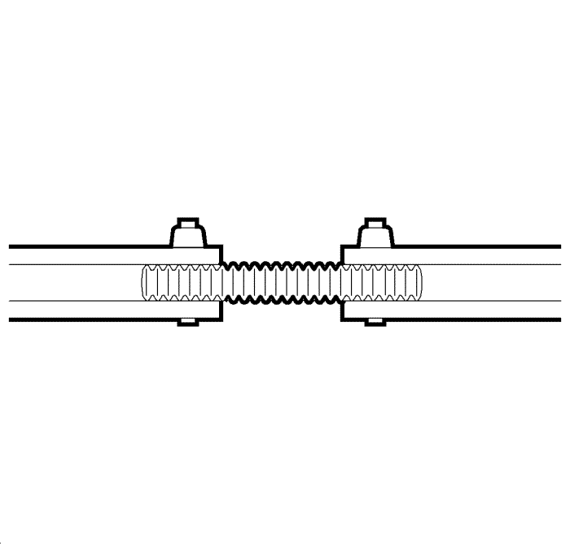
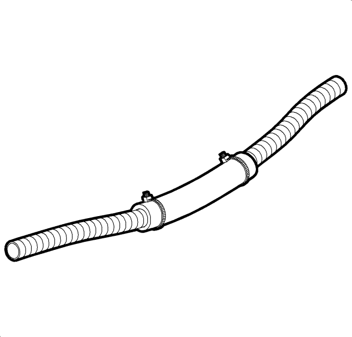

Reparación del tubo flexible del lavaparabrisas
Reparación y disposición del tubo flexible del lavaparabrisas
El tubo flexible del lavaparabrisas puede estar situado dentro del conducto del mazo de cables principal de la carrocería. El tubo flexible del lavaparabrisas es un tubo retorcido de plástico duro que podría estar revestido con cinta aislante a lo largo del mazo de cables eléctricos principal de la carrocería. Empieza debajo del capó, donde se acopla al tubo flexible del puente del contenedor de disolvente del lavaparabrisas. El tubo flexible del lavaparabrisas suele ir por dentro del mazo de cables principal de la carrocería debajo del capó y pasar a través de la parte delantera del pasamuros del salpicadero. El tubo flexible del lavaparabrisas pasa por la parte interior del vehículo, por detrás de la moldura de guarnecido de la ventana lateral delantera izquierda, a lo largo de la zona del cárter del suelo, y continúa hasta la parte trasera del vehículo, según corresponda. El tubo flexible del lavaparabrisas podría dirigirse de vuelta al centro del vehículo, donde podría conectarse posiblemente con la tercera luz de freno o con la bomba del lavaluneta, conectado mediante un tubo flexible de goma, en la abertura del portón trasero, según corresponda.
Procedimiento de desmontaje
- Localice la sección dañada del tubo flexible del lavaparabrisas. Se trata de un tubo retorcido de plástico duro.
- Si la fuga se localiza dentro del mazo de cables principal de la carrocería, corte con cuidado la cinta aislante y fije el mazo de cables dentro del conducto eléctrico para poder ver la sección dañada del tubo flexible del lavaparabrisas.
- Corte y retire la sección dañada del tubo flexible del lavaparabrisas.
Procedimiento de montaje

- Para reparar la sección dañada del tubo flexible del lavaparabrisas, realice los siguientes pasos:
| • | Utilice un tubo flexible de depresión de 9,5 mm (3/8 pulg.) para sustituir la sección dañada. |
| • | Solape el tubo flexible del lavaparabrisas sobre el tubo de plásico 12,5 mm (0,50 pulg.) en cada extremo. |
| • | Fije cada extremo del tubo flexible de depresión con una abrazadera de cables de 100 mm (4 pulg.). |
- Verifique la reparación activando el sistema de lavado delantero y trasero (si procede), y compruebe si el sistema presenta fugas.
- Si la fuga se localiza dentro del conducto o del mazo de cables principal de la carrocería, utilice cinta aislante para fijar la sección reparada al conducto eléctrico del mazo de cables.
- Si la fuga se localiza fuera del conducto, sujete el tubo flexible con abrazaderas de cables para evitar ruidos y movimientos innecesarios.

- Si la fuga requiere la retirada del tubo flexible del lavaparabrisas de la parte delantera del pasamuros del salpicadero, realice lo siguiente:
| • | Corte con cuidado el pasamuros cerca del tubo flexible del lavaparabrisas original. |
| • | Introduzca la nueva sección del tubo flexible del lavaparabrisas a través del él, cerca del tubo del pasamuros existente. |
| • | Repare el tubo flexible a ambos lados del pasamuros. |
| • | Utilice cintas de sujeción pequeñas para fijar el tubo flexible sobre el tubo del lavaparabrisas. |
| • | Verifique la reparación haciendo funcionar el sistema de lavado. |
| • | Selle todas las aberturas del pasamuros que sean de mayor tamaño que el tubo flexible que se ha introducido. |
| © Copyright Chevrolet Europe. All rights reserved |